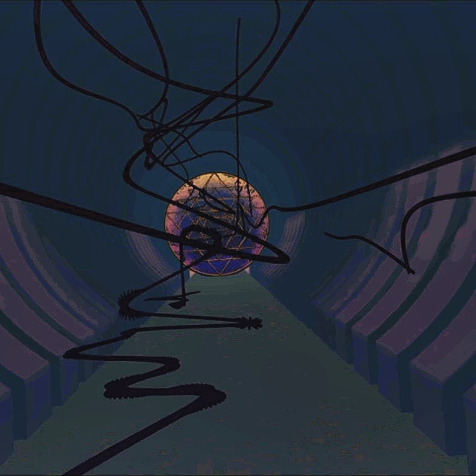

Affective Delineation Series
Immersive VR Installation
The affective delineation series is the results of a digital residency at the Gazelli Art House month of experiments that question how movement qualities can evoke a sense of a sympathetic presence in an immersive VR environment. Within a long corridor, the user is enveloped by the waves of moving but disembodied entities that subtly inhabit the space. Starting with an empty and vacant space, the work will build in flowing sheets of moving light or objects, investigating how each iteration of movement curves, contours and oscillations are seen to be expressive- as if they appear to reveal an inner world, how this changes the user’s experience of the space and their own affective state.
See the project here
Presented at Gazell.io. London, May 2018
